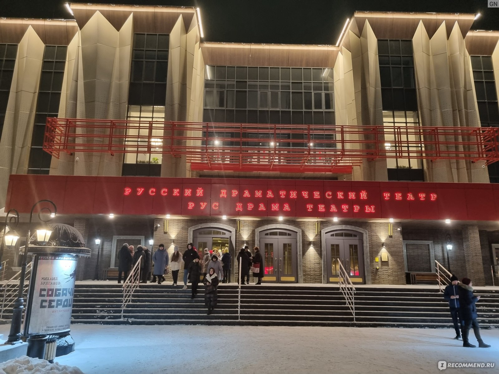
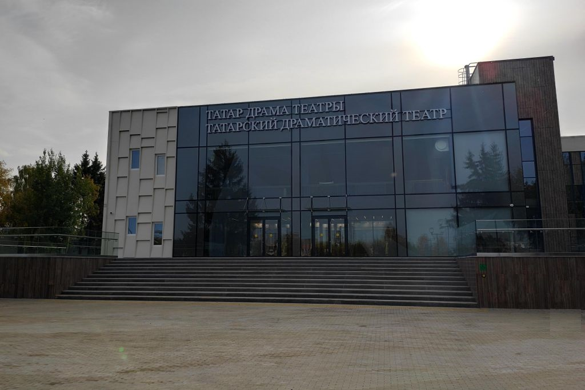

Достопримечательности Набережных Челнов
- Монумент «Родина-мать»
- Бульвар Энтузиастов
- Татарский драматический театр
- Русский драматический театр «Мастеровые»
- Татарский драматический театр
- Историко-краеведческий музей
- Картинная галлерея
- Бизнес-центр 2.18 "Тюбетейка"
- Ледовый дворец спорта
- Памятник Высоцкому
- Памятник Габдулле Тукаю
- Мэчэть Тауба
- Храм Серафима Саровского
- Мечеть Нур-Ихлас
- Мемориал им. Мусы Джалиля
- Памятник "Слава строителям КамАЗа!"
- Набережночелнинский дельфинарий
- Парк Победы
- Парк Прибрежный
- Река Кама и Нижнекамское водохранилище
- Органный зал
1. Монумент «Родина-мать»

Монумент торжественно открыли в 1975 году. Церемония стала частью празднования 30-ой годовщины Победы. Здешний вечный огонь зажгли от огня на Мамаевом кургане. Автором проекта стал Ильдар Ханов. Высота его творения – около 15 м. Габариты позволили написать на мемориальной стене имена семи тысяч героев, погибших, защищая свою Родину. За время своего существования «Родина-мать» никогда не реставрировалась.
2. Бульвар Энтузиастов

Главное украшение этой прогулочной зоны — фонтаны и скульптуры. Автор необычных фигур — Ильдар Ханов. Время установки разное: работы художника появились на бульваре в промежутке между 1981 и 1991 годами. Основные материалы – бетон и разноцветная мозаика. Самые примечательные скульптуры: «Ангел-Хранитель», «Возрождение», «Дерево жизни». В конце августа бульвар традиционно принимает фестиваль цветов.
3. Русский драматический театр «Мастеровые»
Открытие состоялось в 1975 году. Первое представление давали непрофессиональные актёры. Многие из них работали на заводе «КамАЗ». Именно благодаря им, театр получил своё название. В 1982 году труппе частично отдали под репетиции и выступления заводской Дом культуры. Со временем произошла смена вектора развития. На данный момент коллектив состоит из выпускников театральных вузов.
4. Татарский драматический театр
Один из самых молодых театров Татарстана открыл свои двери зрителям в 90-х годах прошлого века. Несколько лет труппа арендовала часть помещений Дома культуры «Энергетик». Получив статус государственного, театр перебрался в просторное здание, которое занимает и по сей день. Часть спектаклей подразумевает участие зрителей в постановках. На эти необычные мастер-классы нужно записываться заранее.
5. Историко-краеведческий музей
Работает с 1972 года. Фонды значительно увеличились с момента открытия и сейчас насчитывают около 40 тысяч единиц хранения. Коллекция включает в себя воссозданные интерьеры прошлого, археологические находки, национальные костюмы, военные трофеи. Среди экспонатов много подлинников, но есть и муляжи. Выставки разных тематик рассказывает об истории края с древности и до наших дней.
6. Картинная галлерея

Открылась в 1980 году и стала филиалом Государственного музея изобразительных искусств республики. У галереи имеются обширные фонды, кроме того, она выступает хранилищем предметов декоративно-прикладного искусства, живописи, скульптур. Сюда привозят временные выставки из главных музеев страны, в том числе из Эрмитажа. Устраиваются экспозиции работ местных художников. На базе галереи проводятся лекции и семинары.
7. Бизнес-центр 2.18 "Тюбетейка"
Бизнес-центр 2.18 «Тюбетейка» - одно из самых высоких и известных зданий в городе Набережные Челны, Татарстан, Россия. Официальное название Бизнес-центр 2.18, а народное название - «Тюбетейка». Его высота составляет восемьдесят один метр. В здании – двадцать четыре этажа. На протяжении длительного времени бизнес-центр является символом города.
8. Ледовый дворец спорта
Колоритное здание ЛДС по праву считается одной из архитектурных изюминок города. Сооружение, введенное в эксплуатацию в 2005 г., выглядит современно, колоритно, футуристично. Дворец спорта многофункционален. Под его сводами размещается ледовая арена, оздоровительные центры, залы для занятий акробатикой, хореографией.
9. Памятник Высоцкому

Именно в Набережных Челнах установлен самый массивный памятник замечательному поэту, певцу, актеру Владимиру Высоцкому. Скульптурная композиция весьма оригинальна. Это не классическая статуя, не бюст, не барельеф. Изваяние, имеющее форму полуколокола-полугитары, пронзительно.
10. Памятник Габдуле Тукаю
Габдулла Тукай входит в число самых известных татарских поэтов и публицистов. Осенью 2011 г., когда праздновался 125-летний юбилей выдающегося литератора и общественного деятеля, его память была увековечена в Набережных Челнах монументально. Памятник весьма колоритен.
11. Мэчэть Тауба
К 1100-летию исламизации Булгарского царства мусульмане Набережных Челнов получили замечательный подарок – великолепную соборную мечеть Таубу. Храмовый комплекс, сразу ставший одним из символов Приволжского города, действительно впечатляет. Фасад здания украшают многоцветные витражи, закрывающие световые проемы, каллиграфические надписи арабской вязью, резные мраморные виньетки. Территория вокруг мечети обнесена оградой, представляющей собой переплетение ажурных элементов из стального литья. Модерновое кирпичное здание мечети облицовано светлой известняковой плиткой, контрастирующей с темным полированным мрамором декора цоколя.
12. Храм Серафима Саровского
Построен к 2006 году на берегу Камы, в месте где в прошлом стояла церковь пророка Ильи. Работы проводились на протяжении 10 лет. В храме необычный и очень красивый иконостас. Его главная икона – изображение Серафима Саровского – подарок от патриарха. Рядом разбили клумбы и цветники, а также возвели надвратную часовню. Территория вокруг обнесена кованой оградой с узорчатыми воротами.
13. Мечеть Нур-Ихлас
Модерновый мусульманский храм, возведенный в последнем десятилетии минувшего века, является подлинным украшением автограда. В экстерьере сооружения угадываются черты свойственные сразу древней булгарской, традиционной арабской и татарской культовой архитектуре.
14. Мемориал им. Мусы Джалиля

Открытие в городе мемориального комплекса, носящего имя знаменитого татарского поэта, было приурочено к празднованию 40-летия великой Победы. Муса Джалиль, ушедший в 1941 г. на фронт добровольцем, даже попав в плен, продолжал всеми силами бороться с врагом, за что был казнен фашистами.
15. Памятник "Слава строителям КамАЗа!"
Установлен на рукотворной насыпи перед промплощадкой Камского комплекса заводов в 1981 году. Его создали члены краснознамённой бригады. Памятник посвящается выпуску второй очереди КамАЗа. Скрепер и бульдозер, а также холм – простая композиция, но наполненная смыслом. Она символизирует труд рабочих, которым приходилось «перелопатить» много земли, прежде чем их старания кто-то оценит.
16. Набережночелнинский дельфинарий

Единственный дельфинарий Татарстана открылся в 2006 году. Здание не строили специально, а переоборудовали уже имевшееся. Зрительный зал вмещает 350 зрителей. В водном шоу участвуют не только дельфины, но и морская львица. Представления проходят почти каждый день. Дополнительные программы включают плавание с дельфинами в бассейне или катание детей на миниатюрной лодке в их окружении.
17. Парк Победы

Разбит в 1975 году, и долгое время только зона с аттракционами была популярна у горожан. Не так давно парк реконструировали, сделав зелёный островок более ухоженным. В 2016 году установили новое колесо обозрения. Три сцены на протяжении года принимают не менее 60 мероприятий. Работают палатки с едой и сувенирами. На территории парка находится Аллея тружеников тыла. Рядом выставлена военная техника прошлого.
18. Парк Прибрежный

Популярное место для отдыха. Здесь есть разнообразные виды занятий для туристов и местных жителей. Любители шахмат могут сыграть фигурами внушительных размеров. Обустроена современная многокилометровая велодорожка. Зимой прокладывают лыжные трассы через весь парк. На склоне холма установлены большие буквы – название города на татарском языке. Парк принимает концерты и крупные мероприятия.
19. Река Кама и Нижнекамское водохранилище
Один из самых крупных притоков Волги – Кама – протекает в нескольких регионах России и имеет общую протяжённость более 1800 км. Судоходна примерно на половине своей длины. Нижнекамское водохранилище появилось на реке в 1979 году. Оно стало главной природной достопримечательностью Набережных Челнов. На берегу построены детские и спортивные площадки, есть места для пикника и рыбалки, курсирует теплоход.
20. Органный зал

Органный зал представляет собой концертный зал, предназначенный для органной и камерной музыки. По своим акустическим характеристикам он является единственным заведением подобного рода в России. Комплекс не оборудован микрофонами или усилителями звуков. Здесь проводятся концерты, выступления артистов, музыкантов.